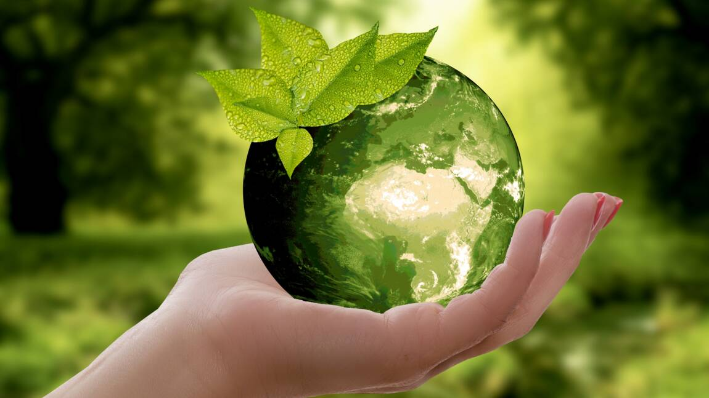
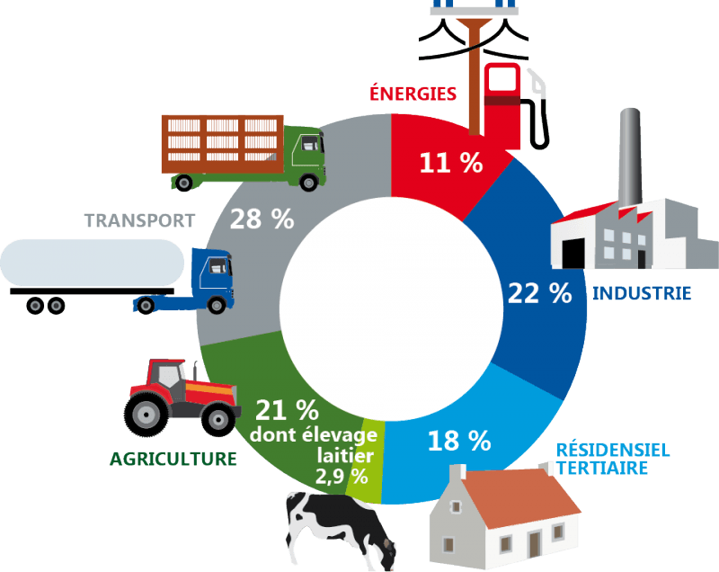

L’empreinte carbone est un indicateur qui vise à mesurer l’impact d’une activité sur l’environnement, et plus particulièrement les émissions de gaz à effet de serre liées à cette activité. Elle peut s’appliquer à un individu (selon son mode de vie), à une entreprise (selon ses activités) ou un territoire. Cet impact est généralement exprimé en dioxyde de carbone équivalent ou CO2e. La raison ? Par souci de simplicité et d'homogénéisation, on utilise pour tous les gaz à effet de serre une seule norme rapportée au CO2. Cela revient ainsi à déterminer combien de CO2 retiendrait la même quantité de rayonnement solaire et donc contribuerait au réchauffement climatique. À l’échelle d’un pays, l’INSEE définit l’empreinte carbone induite par la la demande finale intérieure d'un pays (consommation des ménages, administrations publiques, organismes à but non lucratifs, investissement), que ces biens ou services soient produits sur le territoire national ou importés. Vous trouverez ci-dessous un graphique afin de mieux comprendre la consommation de gaz à effet de serre :


Les gaz à effet de serre émis des ménages représente 57%
notamment la combustion de carburants pour le transport et d’énergies fossiles pour le chauffage de nos logements.
Les gaz à effet de serre issues de l'agriculuture représente 21%
destinée à la demande intérieure (hors exportations)
Les gaz à effet de serre émis par l'industrie représente 18%.